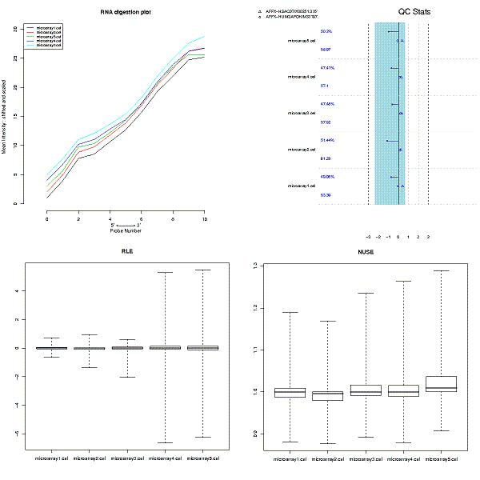
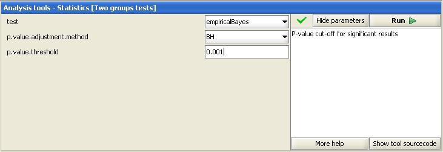
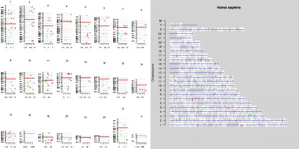
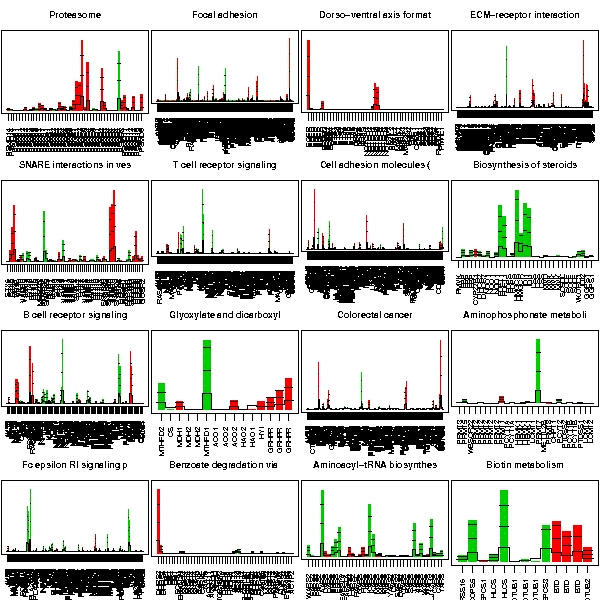

The datafiles used for this example are from GEO database entry GSE2509. The whole dataset is on FTP at GEO. After downloading the dataset was expanded into a single folder.
The dataset consists of six samples hybridized on human Affymetrix hgu133a chips. Three replicates were derived from a primary tumor of colorectal cancer, and three other replicates from the metastasis from lymph nodes. The groups of the sample (or chips) are as follows:
| sample | tumor type |
|---|---|
| GSM47872 | primary tumor |
| GSM47873 | primary tumor |
| GSM47874 | primary tumor |
| GSM47875 | lymph node metastasis |
| GSM47876 | lymph node metastasis |
| GSM47877 | lymph node metastasis |
The primary interest is the difference in gene expression between primary tumors and lymph node metastases.
The files were imported and normalized as described in the manual. The file GSM27876 was corrupted, and was omitted from the analysis. Thus, there were only two replicates in the metastasis group. In the phenodata column group primary tumors were labelled with 1 and the metastases with 2.

Two separate quality controls were run for the dataset:
The quality of the chips was acceptable, since all the chips showed a similar trend for RNA degradation, and all the usual quality parameters were within the acceptable range. The spread in the relative log-expression (RLE) plot was higher for chips from the metastasis samples, but that can be expected, since there probably are large differences between these two sample groups. NUSE plot was clean, and did not show any conspicious pattern.
Since the quality control did not show anything alarming, all chips were retained for further analyses.
The aim of statistical testing was to find the genes that differentiate between the groups. No false positives genes were wanted, so the FDR of the statistical test was tuned very low (0.001). Empirical Bayes from the two-group test was utilized:
This analysis returned 244 significantly differentially expressed genes.
First, to check whether the differentially expressed genes show any clustering to some of the chromosomes, two visualizations were generated:
From the resulting images it easy to see that no very conspicious clusterings of genes along the chromosomes are present.
To better characterize the role of the differentially expressed gene in the cells, the genes were annotated usign the gene list annotation -tool. After a short browsing through the annotations, it seems that genes are often annotated to KEGG pathways Wnt signalling, Complement and coagulation cascades, Axon guidance, Cytokine receptor-receptor interaction, and MAPK-signalling pathway, and to similar GO categories.
To check whether genes are statistically significantly associated with some of terms, two separate analyses were run:
The first tests whether a bunch of genes is statistically significant as a group. In this case, groups are formed on the basis of KEGG pathways. The second tests whether some of the differentially expressed genes are enriched for some of the GO terms.
The 16 most significant KEGG pathways are:
Since there certainly are differentially expressed genes that are linked to the same biological process, we can run promoter analysis on those genes's promoters, and see if some of transcription factor binding sites form block that might explain the possible co-regulation. This is achieved by running the tool:
As can be read from the ClusterBuster output there are some possible clusters of known transcription factor binding sites. This might warrant a further analysis in some specialized promoter analysis software.
There seem to be gene expression differences between the primary tumors and lymph node metastases of colorectal cancer, and those changes are linked